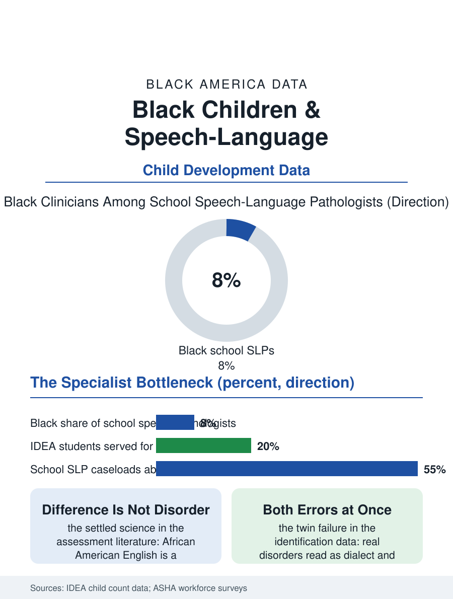

Black Public Health
Difference or Disorder: Black Children and Speech-Language
Speech evaluations must distinguish dialect from disorder, a judgment call made by a scarce, thinly diverse workforce over the root system of literacy. The speech file.

Speech and language are the machinery of school, and delays in them are among the earliest measurable disadvantages a child can carry. Federal special education data count speech or language impairment as one of the largest disability categories in the schools, and Black children move through its identification and services on a distinctive path: referred through behavior as often as through language, identified at rates that swing with the district, and served by a specialist workforce in which Black clinicians are scarce. This article reads the speech file.
Identification's Two Errors
The identification file contains both errors at once, and the research literature insists on holding them together. Under-identification appears in the screening data: Black children with genuine language disorders identified later than white peers with equivalent presentations, their delays attributed to dialect, to behavior, to the wait-and-see counsel that costs the intervention its early window, when the brain's language systems are most plastic and the therapy's yield per hour is highest. Over-identification appears beside it in particular districts and categories, Black boys especially routed into disability classifications through pathways where language difference, the systematic grammar of African American English, is misread as disorder by instruments and evaluators not trained in the distinction, a distinction the professional literature has codified for decades and the assessment market still builds tests that blur. The dialect question is the file's intellectual center, and it is settled science handled carelessly: African American English is a rule-governed dialect, not a deficit, and the competent evaluation tests the child's language against the dialect's own rules, counting as errors only what the home language itself would count, a standard the speech-language pathology profession teaches and the school evaluation market honors unevenly. The cost of both errors is denominated in the same currency: the child read as disordered who was not loses standing and placement; the child whose disorder was read as dialect loses years.
The Specialist Shortage
The workforce that performs this discrimination between difference and disorder is the file's bottleneck. Speech-language pathologists are in chronic shortage in the schools, caseloads in the high-poverty districts running at levels the professional association's surveys describe as unmanageable, and the profession's demographics, roughly eight or nine percent Black among school-based clinicians by the association's counts, with the master's-gated pipeline priced like the librarian file's, mean the evaluator who shares the child's dialect is the exception in the room where the child's dialect is being judged. The service model dilutes what the workforce provides: large-group sessions, consultative models where the specialist advises rather than treats, and the teletherapy vendors who now staff rural and shortage districts, each a rational response to scarcity whose cumulative effect is that the children with the most complex presentations receive the thinnest version of the service. Early intervention, the birth-to-three system that should catch the delays before school, shows the access pattern of every referral-based system in this atlas, pediatricians screening and referring at rates that vary by practice, families' completion of the referral varying by everything else, so the school becomes the identifier of first resort for the population least able to substitute private evaluation.
What Fluency Unlocks
The stakes are the literacy file's: oral language is reading's foundation, and the child whose language disorder is untreated or mislabeled meets print with a broken scaffold, appearing in the third-grade reading data as a comprehension failure whose cause was auditory and grammatical all along. The successful systems in the record share a design the file can specify: universal language screening in the preschool years conducted with dialect-fair instruments, evaluator training that treats the dialect distinction as core competence rather than enrichment, and family partnership that recruits the household's language knowledge as data rather than treating the home's speech as the problem, since the grandmother's report of how the child talks at home is frequently the most valid language sample in the file. The bilingual dimension adds the newest layer, Black immigrant children navigating two or three languages, whose evaluations require an expertise the workforce holds in even thinner supply. The speech file closes in the therapy room, where a child works on a sound the way an athlete works on a motion, in repetitions, toward the day the machinery runs unobserved. Language is the first technology every other file in this atlas assumes. The children whose access to it is mediated by an underbuilt, under-diverse specialist system are not behind in one school subject. They are behind at the root system of school itself, which is why the file counts a speech evaluation, correctly done, among the highest-leverage documents in a Black child's educational record.
More in Black Public Health
Hypertension Among Black Adults: Prevalence, Control, and Consequences
About 55 percent of Black adults have hypertension — the highest rate of any U.S. group. Prevalence, onset, control, and the stroke, heart, and kidney consequences in the data.
Diabetes Among Black Adults: Prevalence and Complications
Nearly one in five Black adults has diabetes, diagnosed or undiagnosed — and its complications fall with particular weight. The CDC data on prevalence, control, and outcomes.
Black Life Expectancy: The Gap at Birth and Its Causes
Black life expectancy at birth is about 73 years, roughly five years below the national figure — the summary measure of every health gap in this section. The CDC data.
Source: U.S. Department of Education, IDEA child count and educational environments data; American Speech-Language-Hearing Association workforce surveys.